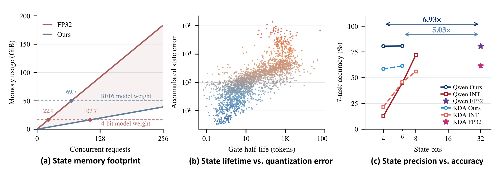
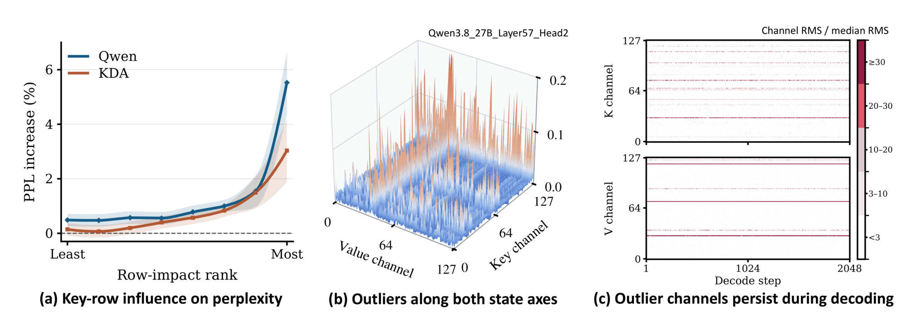
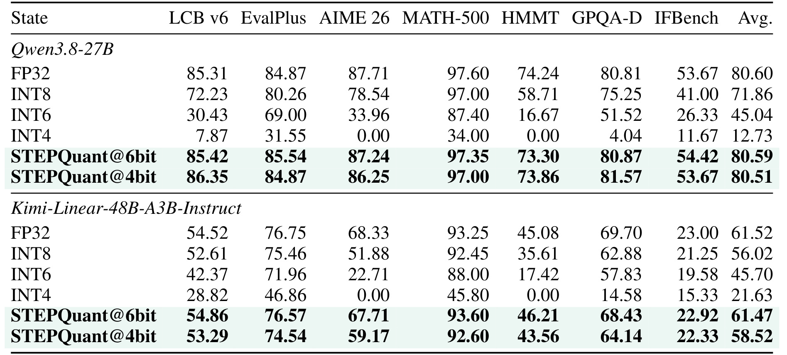
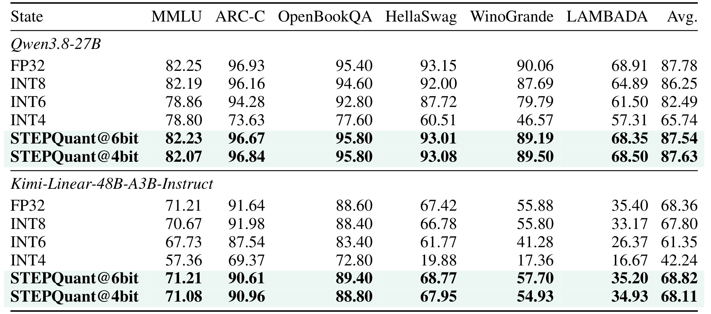
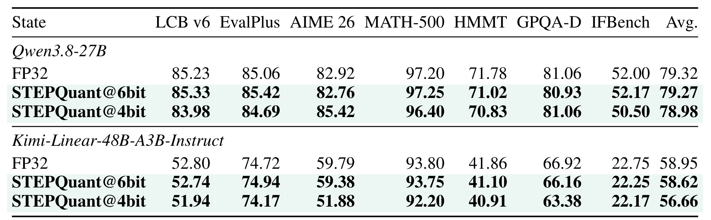
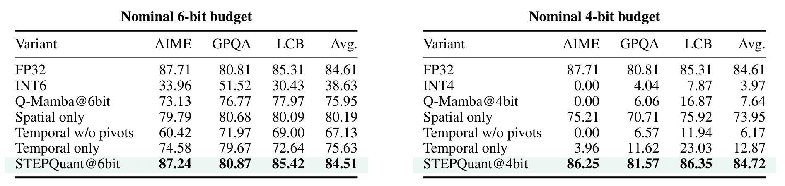
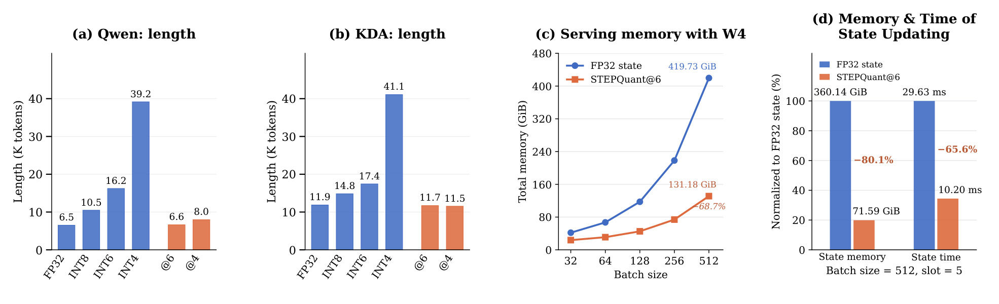
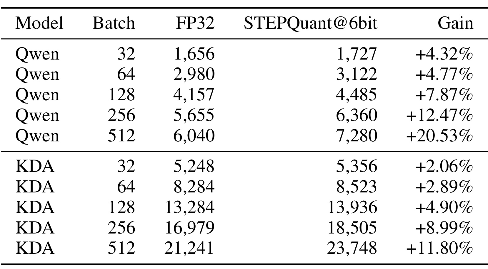

STEPQuant：循环状态量化中，误差何时以及在哪些位置更重要
STEPQuant研究混合线性注意力模型的循环状态量化：它根据量化误差的持续寿命分配混合位宽，再按键行读出影响与值列幅值联合拟合尺度，以降低并发服务中持久状态的存储成本。第一作者Bingchen Yao来自浙江大学，并列一作Haobo Xu来自清华大学；其余作者为Haokun Lin、Yichen Wu、Ziyu Guo、Renrui Zhang、Zhichao Lu、Zhenan Sun、Ying Wei，合作机构包括中科院自动化所、香港城市大学、哈佛大学和香港中文大学。
论文原文：STEPQuant: When and Where Errors Matter in Delta-Rule Recurrent State Quantization于2026年9月29日17:59:40 UTC发布arXiv v1技术报告，本次核验日期为2026年10月1日（Asia/Shanghai）。官方STEPQuant代码仓库可访问，包含实现、配置、基准与测试目录；本笔记未运行代码或复现实验。
直接把循环状态量化到低精度往往造成严重的准确率下降，因为量化误差会经由连续的状态更新传播。
1. 背景和问题
STEPQuant研究的对象是混合注意力模型推理时保存的循环状态，而非模型权重或普通全注意力层的键值缓存。理解这一点，才能看清为何“线性注意力已经把存储变成固定大小”之后仍需要专门压缩。标准注意力为每个已处理位置保存键值，序列越长缓存越大；门控线性注意力把过去的信息汇总到固定维度的状态矩阵，单条请求的矩阵元素数不随上下文长度增长。但每条并发请求都有自己的矩阵，各个循环层、各个头也分别保存矩阵，服务调度还可能额外预留用于缓存、重叠追踪和请求复用的状态槽。因此，固定大小只解决了长度这个维度上的增长，没有消除并发数量、层数、头数和矩阵维度带来的显存压力。
作者用Qwen3.8-27B与Kimi-Linear-48B-A3B-Instruct作实例。前者包含采用头级标量遗忘门的Gated DeltaNet，后者采用按键通道设置遗忘门的Kimi Delta Attention。Qwen有四十八个循环层、每层四十八个状态头，每个头的矩阵为一百二十八行乘一百二十八列。其每请求循环矩阵包含三千七百多万个元素，用单精度保存就是一百四十四MiB，这还没有包含卷积状态、全注意力缓存、工作区和模型权重。一个请求看起来尚可承受，数百个并发请求再乘多个预留槽就会变成大型状态池。论文指出，特定SGLang五槽配置下，约七十个受支持并发请求的Qwen单精度状态池已超过其半精度文本权重的大小。这个交点依赖服务配置，不应当作所有实现的普遍常数。

原Figure 1用三个面板把问题连起来。左图横轴是支持的并发请求数，纵轴是状态池占用；红色单精度线随请求数增长，蓝色压缩线斜率较小。两条水平虚线表示半精度和四位权重的文本权重负载，可见权重压缩后，状态池更早成为显存组成中的主要部分。这里计算的是预留状态容量，不能把水平交点解释为程序已经发生显存溢出的实测临界点。中图在Qwen两千三百零四个循环头上比较门的半衰期和累计状态误差，横纵轴都采用对数刻度，长期记忆的头倾向积累较大的误差。这是关联性诊断，作者用受控参考输入轨迹进一步解释传播机制，并没有证明半衰期足以唯一决定每个头的误差。右图将均匀整数状态与STEPQuant放在同一准确率视角：同样名义四位或六位，均匀量化明显下降，而结构化方法接近单精度。两个模型的曲线仍有差异，尤其KDA四位并未达到完全无损。图上标出的压缩倍数针对循环状态表示，也不是整个模型文件或服务总显存都缩小相同比例。三个面板共同支持的结论是：需要在并发存储压力与递归误差敏感性之间分配有限精度，单纯按相同位宽压缩所有位置不足以满足这一目标。附录补充了分组累计误差证据：Qwen寿命最长四分之一头贡献超过一半的状态平方误差，KDA最长四分之一键行贡献接近八成。两者是在各自层或头内按寿命排序后汇总，并不是简单挑出误差最大的单元。这降低了事后按坏结果挑样本的解释风险，也说明寿命信号能够在看见具体误差之前提供保护依据。
循环状态量化与一次性激活量化的区别在于，状态本身是下一次更新的输入。当前步骤先从压缩形式重建历史矩阵，进行浮点更新并产生当前输出，再把更新后的矩阵重新量化保存。四舍五入误差因此被写进了“记忆”，下一个词元又从这份近似记忆出发。四位状态不像静态压缩权重那样只有固定的一份舍入结果，它对每一步新的浮点状态都重新投影。即使每步的状态转移不放大向量范数，反复注入的小误差仍可能在缓慢遗忘的方向积累。与此相反，普通某层激活的局部误差通常经过后续网络向前传递，却不会作为同一层的持久状态被逐词元读写。本文的技术难点正是持久性，而不是寻找一个更好的静态最大值缩放常数。
这种误差还有空间异质性。状态矩阵的行对应键空间方向，列对应值空间方向，不同行上的同范数误差对下一次输出的影响不一样。查询和Delta校正会决定某行误差是否被读出，因此仅看该行绝对值大小并不等于知道它有多重要。同时，较大幅值既可能沿键行出现，也可能沿值列出现；只按行或只按列做缩放，很难同时容纳两种异常值结构。作者把两个维度拆开：时间维度决定哪里应多给位宽、哪些极少数单元保留半精度；空间维度决定低精度矩阵应如何按行列共同拟合，以降低真正影响输出的位置上的误差。
由此，阅读本文最有价值的主线是“误差大小、误差寿命、输出敏感性”三者的关系。仅用重建均方误差作精度分配，会忽略同等误差可在后续传播多久；仅按遗忘速度作保护，会忽略当前状态的可量化性；仅把异常值留在高精度，又可能错过幅值不大但读出敏感的行。STEPQuant并不重新训练模型，不修改模型原有记忆更新规则，而是用少量离线样本收集这些统计量，形成固定混合位宽和枢轴布局，然后在在线解码中重新拟合尺度。它属于训练后状态量化，核心贡献是使有限存储精度对齐递归状态的真实误差结构。
论文对问题的验证也具有明确边界。主文中的精度基线是SGLang默认的单精度状态，模型权重则分别以半精度或AWQ四位保存。短任务采用实际生成答案评分，长任务包含数学、代码和指令遵循，并允许很长的输出。这样既考察局部语言理解，也考察误差在长推理中的后果，但不是无限上下文或所有真实线上请求的测试。作者报告的准确率接近单精度，应理解为这些检查点和采样设置下的经验结果；后文的条件传播公式则是在相同输入和门控下分析状态误差，不能直接给自由生成轨迹提供全局稳定性保证。
2. 方法
2.1 Lifetime-aware Bit Allocation：按误差大小与记忆寿命分配精度
先把Delta-rule更新写清楚，才能知道位宽分配保护什么。当前键先从已经经过门控的旧状态取回值，再用新值与取回值的差更新该键方向的关联。这个误差反馈既是记忆写入机制，也影响量化误差的消减。为了单独比较压缩影响，以下递推把层和头编号省略，固定参考路径上的当前输入，参考状态递推与读出为：
符号解释：这里，$S_t$是键维度乘值维度的状态矩阵，$q_t$、$k_t$、$v_t$分别是查询、键和值；$D_t$是遗忘门，$\beta_t$是写入强度，$A_t$负责运输和修正历史记忆，$B_t$注入新值。Qwen的$D_t=\alpha_t I$，一个头共享标量保留率；KDA的$D_t$是对角矩阵，不同键行可以有不同保留率。更新首先遗忘旧状态，再根据当前键取出的旧值与新值之间的残差修正记忆，最后用查询读出。这种校正不等同于只往状态中累加键值外积。在线量化时，当前输出与重新保存的状态之间有时间顺序：
符号解释：$\widehat S_{t-1}$是从上一步压缩表示重建的近似状态，$X_t$是当前浮点更新结果，$Q_t$是本步量化器，$\widehat y_t$在本步重新量化之前产生。因而本步新引入的舍入误差不会直接污染本步读出，而会通过未来步骤影响输出。对相同键、值、查询和门控的参考轨迹，设累计状态误差为$E_t$，新量化误差为$\varepsilon_t$，得到：
符号解释：$E_t=\widehat S_t-S_t$，$\varepsilon_t=Q_t(X_t)-X_t$。当键范数不超过一、写强度处于零到一、门矩阵为半正定且不超过单位阵时，转移的谱范数不超过门的谱范数。Delta校正会进一步削弱误差中沿当前键的分量，正交方向则主要依赖门控遗忘。非扩张转移并不消除持续误差注入；越难遗忘的记忆方向越需要精度保护。附录的精确读出干预也说明，去掉Delta残差对自身误差的反馈会使后续误差增大，因此不能用“每步都乘门”完全替代真实更新。作者为分配单元$u$收集平均对数保留率，并估计有限未来窗口中的平方误差寿命权重：
符号解释：$r_{t,u}$是单元的保留率，$H$是考虑的步数，$\ell_u$越接近零意味着保留越强，$L_u$越大。因平方误差随保留因子的平方衰减，指数项包含两倍对数保留率。这是只根据门计算的近似寿命，未建模所有随时间变化的键方向和误差交叉项。再对每档候选精度估计重建失真$d_u(b)$，求解：
符号解释：$b_u$是分配位宽，$\mathcal B_{\bar b}$是名义预算下的候选集合，$n_u$是单元元素数，$\bar b$是平均整数位宽预算。Qwen以整个头为单元，用多选动态规划；KDA以键行为单元，用拉格朗日分配后修复离散预算。四位预算候选是二、四、六、八位，六位预算候选是四、六、八位。极少数最高风险单元额外保留为半精度枢轴：Qwen三十二个头，KDA五百一十二个键行。位宽、枢轴和重要性在离线校准后冻结，在线无需逐词元重解分配问题。Qwen失真含行重要性平方加权；KDA分配使用每行普通均方误差，但候选重建来自空间编码器，不能把两模型的失真定义完全混同。
2.2 Key-Row-Aware Dual-axis Fitting：同时处理读出敏感性与行列幅值
时间模块给不同单元多少位，空间模块则回答这些位如何有效表达当前矩阵。由上面的输出误差可知，一行误差的系数来自经过转移的查询，而不是裸查询或状态行幅值。对于KDA，这个运输过程先考虑查询与键之间的相互投影，再乘键行的通道保留率，因而同时反映即时校正和遗忘。将这种敏感性在校准词元上平均，可得到固定的行影响分数：
符号解释：$g_t$是把本步查询运输回旧状态坐标得到的向量，$\omega_i$是第$i$个键行的校准读出影响分数。只在这一行注入单位范数误差，下一次读出的平方误差正是该系数的平方。KDA中它显式含通道门与Delta校正，因此不同键行即使幅值相近，重要性也可能不同。这个分数是一步敏感性代理，而不是完整未来输出损失的精确积分。

原Figure 2左面板先按影响分数在每个头内分成八组，每次只把其中一组量化为四位，其余行保持全精度，再比较困惑度变化。影响排名越高的组通常造成越大的困惑度增加，尤其右端最高影响组恶化明显，支持把重要性加入尺度拟合。该干预与单纯观察幅值相关性不同，它主动改变一组行的精度，因此更接近量化所产生的真实输出后果；但曲线趋势并不意味着任意单行分数与任意任务损失完全单调对应。中间的Qwen原坐标状态表面同时出现沿键行和沿值列延伸的异常值脊线，两轴交点也可能是高值。对这种几何，只给每行一个最大值尺度仍会在值列方向浪费分辨率，反过来只按列也一样。右侧热图以各通道均方根与轴内中位数之比呈现二千零四十八个解码步骤的变化，红色水平纹路意味着部分高幅值通道持续存在，而不是偶发一个词元的尖峰。图中的方法依据因此分两层：输出敏感性决定误差应当在哪里付出更大代价，双轴几何决定怎样压缩幅值范围。作者的具体Qwen总体统计显示行轴和列轴最大值相对中位数的典型倍率分别为十点三与十九点四，两轴都超过三倍的状态占百分之九十八点六；这些统计来自大量轨迹快照，不能解释为独立训练模型的重复实验。KDA的对应附录统计不同，也说明空间结构需要按检查点校准。对当前更新矩阵$X$，方法用行尺度$r_i$和列尺度$c_j$共同重建：在KDA的三千八百四十个附录快照中，两轴最大值对中位数的典型比率分别为十二点七和五点四，两者都超过三倍的比例约百分之八十四点九，低于Qwen统计。中间表面图只是一个代表性样本，作者保留原生通道次序并对过高峰值截断显示，所以不能仅根据可见表面高度反推完整状态分布。
符号解释：$z_{ij}$是对应位宽的离散编码值，$d_v$是值维度，$m_i$表示当前行平均绝对幅值，$w_i$来自影响分数的温和幂次变换与头内几何平均归一化。论文采用$\gamma=0.25$，即先取$\omega_i^{\gamma/2}$再归一化。较大幅值需要更大行范围，而较重要的行通过较小尺度获得更细分辨率，两者以平方根方式平衡。列尺度接着最小化：
符号解释：$c_j$捕获剩余值列方向的幅值差异，$w_i^2$是重建误差惩罚权重，使高影响行对拟合有更大贡献。固定离散编码时，附录给出的每列更新为：
符号解释：$I$表示非枢轴整数行，$v_{ij}$是乘行尺度后的编码值；实现有正数下界，分母为零时保留前一尺度。KDA将不同位宽的整数码按固定精度归一化，以便同一个头内不同位宽的行共享列尺度，枢轴行不参与整数列拟合。在线更新的是当前幅值相关尺度与整数码，离线影响分数和精度布局保持不变。这种离线敏感性加在线几何适配，是时间模块与空间模块接合的具体方式。
2.3 Kernel Implementation in SGLang：压缩状态的解码读写
该方法的第三部分把数学表达转换成持久存储形式。离线校准使用三十二段WikiText-2训练文本，每段二千零四十八词元；权重量化格式和状态预算不同也采用同一规模校准数据。校准产物包含精度映射、枢轴标识、行影响统计以及编码器参数，映射到SGLang的请求槽与张量并行分片。训练阶段无需改造模型或更新权重；预填充时解包活动状态，执行原生分块核，再压缩边界状态。真正高频的解码阶段则逐词元读取压缩页、临时在浮点块中重建、更新和读出，没有在持久池里另放整矩阵单精度影子。
融合内核将块状重建、Delta更新和当前查询读出合并，避免先把整个矩阵展开后再跑另一个更新核。头输出准备好后，后续层可以继续计算，同一状态的双轴尺度拟合与压缩写回在另一条CUDA流执行。旧表示要在所有读者完成前保持有效，而新表示必须在下一次循环步骤读取前写回完毕。这里隐藏的是写回开销，不能省略依赖同步，否则下一词元可能读到旧页。半精度枢轴与整数页走同一逻辑生命周期，二位路径还有特殊共享行因子与有符号幅值级实现细节。最终收益依赖融合、流间重叠以及固定布局共同作用，单独把量化公式插入普通循环实现，未必得到论文报告的时延下降。
3. 实验结果
3.1 长生成与短生成的准确率
实验使用四张NVIDIA A800、SGLang以及两个混合注意力检查点，分别测试半精度权重和AWQ四位权重。全精度参照是单精度循环状态，普通整数基线按行绝对最大值进行对称量化。长生成覆盖LiveCodeBench v6、EvalPlus、AIME 2026、MATH-500、HMMT February 2026、GPQA Diamond、IFBench，依次每题生成五、五、六十四、四、六十四、八、四个样本。温度为一，截断候选数二十、累计概率阈值零点九五，最多生成六万五千五百三十六词元。各任务样本数不同，最终平均分却对任务等权，故不是把所有生成样本直接合成一个总体正确率。

原Table 1给出了本文最直接的精度证据。Qwen的单精度状态七任务平均为百分之八十点六零，均匀八位已降到百分之七十一点八六，均匀六位仅百分之四十五点零四，均匀四位进一步跌到百分之十二点七三。STEPQuant名义六位恢复到百分之八十点五九，名义四位为百分之八十点五一，相对单精度分别低零点零一和零点零九个百分点。改善不是只有一个容易任务抬高均值：代码、数学、科学问答和指令任务大多都保持接近参考。例如均匀四位在AIME和HMMT均为零，而结构化四位仍达到百分之八十六点二五和百分之七十三点八六。Kimi的趋势相似但四位边界更明显：单精度平均百分之六十一点五二，六位STEPQuant为百分之六十一点四七，四位为百分之五十八点五二。后者比均匀八位的百分之五十六点零二高两点五零个百分点，却仍比单精度低三个百分点。逐项看，AIME从百分之六十八点三三降到百分之五十九点一七，GPQA从百分之六十九点七零降到百分之六十四点一四，表明平均分背后有困难任务损失。准确解释应是六位在这两个模型上接近单精度，四位在Qwen上非常接近、在KDA上保留大部分能力；不能把摘要的优势表达扩张为所有模型四位完全无损。表中部分量化设定在个别指标略高于单精度，但未见多种随机种子误差条，不能据此声称压缩本身提升了模型固有能力。同一表里较容易的MATH-500对均匀六位的损失小于困难竞赛数学，说明平均恢复不意味着任务敏感性一致。Qwen均匀六位在MATH-500仍有百分之八十七点四，但HMMT只有百分之十六点六七；KDA也表现出相似差别。输出错误可能与生成步数、校准覆盖和题型共同相关，需要按任务保留评测轨迹。
短生成的六个任务包括MMLU、ARC-C、OpenBookQA、HellaSwag、WinoGrande、LAMBADA，采取贪心生成，每个样本生成一个答案，然后从实际输出抽取答案评分。该选择贴近作者要优化的自回归解码：如果模型在状态误差下无法按要求输出答案，预测内容本身与格式都影响最终分数。它不同于直接计算各候选答案似然的传统多选评测，横向引用别的论文时必须保持这个区别。

原Table 2显示低位宽失效不仅发生在数万词元推理中。Qwen单精度平均百分之八十七点七八，四位STEPQuant为百分之八十七点六三，差零点一五个百分点；KDA对应百分之六十八点三六与百分之六十八点一一，差零点二五个百分点。名义六位的Qwen为百分之八十七点五四，KDA为百分之六十八点八二，均处在接近参考的范围。普通四位则分别下降到百分之六十五点七四和百分之四十二点二四，KDA的HellaSwag、WinoGrande、LAMBADA跌幅都很大。特别需要解释WinoGrande两选一任务：普通四位的Qwen为百分之四十六点五七，KDA只有百分之十七点三六，低于二选一随机水平并不与任务定义矛盾。附录指出，生成输出如果没有可抽取的有效选择，直接算错误，所以这里不仅衡量选择知识，也衡量解码时继续遵守答案格式的能力。空间拟合和长期保护避免状态失真，使得答案生成过程本身保持完整。长短任务合起来说明，量化风险既会在长轨迹积累，也会立即影响有效输出；短任务稳定不能替代长推理测试，长任务平均高也不能保证每种格式始终安全。因此，在部署评估中应同时保存抽取失败率、单任务准确率和输出长度，以区分知识判断错误与格式失效，不能只看这张表的最后一列。短任务中LAMBADA对量化仍较敏感：Qwen八位相比参考下降约四个百分点，KDA八位下降约两点二个百分点。其答案生成不只是比较几个选项，而涉及输出目标词元。结构化四位在该列分别为百分之六十八点五零和百分之三十四点九三，接近参考，这也说明其收益不限于避免多选格式失效。
3.2 权重量化兼容性与组件贡献
AWQ四位权重下，所有状态方案与同样AWQ权重的单精度状态比较，而非与半精度权重原模型混比。这样才可分离权重量化造成的变化与状态量化额外造成的变化。权重占用更小后，请求状态在总显存中的比例变高，状态压缩的相对价值上升；不过准确率也要在已压缩权重基础上重新校准与检查。

原Table 3中，Qwen AWQ权重配单精度状态的平均分为百分之七十九点三二，名义六位为百分之七十九点二七，名义四位为百分之七十八点九八，额外下降分别零点零五和零点三四个百分点。KDA对应百分之五十八点九五、百分之五十八点六二、百分之五十六点六六，额外下降零点三三和二点二九个百分点。这里的基线本身已经低于半精度权重那组分数，不能把两个表里的绝对差都归咎于循环状态量化。KDA四位仍主要在AIME等困难推理上付出代价，而Qwen总体较稳。作者也提供输出长度：AWQ Qwen四位平均从七点二二千增至九点五零千词元，增加约百分之三十一点六，尽管平均准确率只小幅下降；KDA从十二点七零千增至十三点二六千，约增加百分之四点四。由此可以看到，准确率与实际解码成本并非同一信号。四位的存储更低，如果生成变长，部分省下来的资源可能被更多解码步消耗。六位也不是每项分数都等于参考，只是平均损失在这些设置下较小。论文支持“与AWQ兼容”这个判断，却不自动证明和任意权重量化器、任意检查点、任意动态业务分布都有相同兼容性。复现这组结果应使用权重格式匹配的校准和精度映射，保持生成采样配置一致，并同时核对数学任务的额外损失与输出长度尾部。这组对照没有列出AWQ权重下所有普通整数状态基线，因此它主要证明完整方法在权重压缩后仍保持较小额外损失，不能直接从本表重算相对八位或其他空间编码器的优势。主文与附录也没有给出跨权重格式共享一张精度映射的受控实验，迁移校准配置应当额外验收。
组件消融把完整方法拆成仅空间拟合、带枢轴的仅时间分配、移除枢轴的时间分配，并引入适配自Q-Mamba的双轴状态量化基线。各方法名义预算相同，但其中枢轴与尺度元数据另计，因此既应比较准确率，也应理解实际表示成本。只空间保留统一位宽而更改拟合，只时间更改位宽分配并保护少数枢轴但不使用空间拟合，完整方法将二者合并。

原Table 4说明空间模块在极低位宽下尤其重要。名义四位时，Q-Mamba适配基线三任务平均仅百分之七点六四，仅空间拟合已达到百分之七十三点九五，完整方法为百分之八十四点七二，接近单精度的百分之八十四点六一。只按寿命分配即使加枢轴也只有百分之十二点八七，移除枢轴更低至百分之六点一七，说明有限预算下时间保护无法替代行重要性与双轴尺度。六位时，仅空间为百分之八十点一九，仅时间为百分之七十五点六三，完整方法百分之八十四点五一，再次支持互补性。枢轴只占Qwen头数约百分之一点三九，却把四位仅时间平均提高六点七零个百分点；六位AIME由百分之六十点四二提高到百分之七十四点五八，体现极少数高风险记忆对长推理的重要作用。但枢轴不是唯一成因：如果空间拟合缺失，极少量高精度仍不能救回四位效果。附录KDA消融提供一致方向：四位仅空间百分之三十八点八九、仅时间百分之二十九点零八、完整方法百分之五十八点八七；六位分别百分之六十一点零零、百分之五十八点九一、百分之六十三点六七。KDA单精度三任务平均百分之六十四点一八，因此完整四位仍有可见损失。两张消融表均不应与七任务主表平均混用，也不能由完整方法偶然略高于参考宣称确定性的性能增益。真正稳固的证据是两种设计各有作用，合并后显著优于对应单模块。还需注意六位AIME单独变化与三任务均值不能交换：枢轴保护在这一任务上有十四点一六个百分点贡献，但其他两项增益不同。作者在两个预算下都固定了枢轴数量，因此极低位宽时枢轴相对存储开销更突出，解释保护价值时要同时报告其数量和有效位宽。
3.3 生成长度、状态成本与完整模型吞吐
作者进一步检查是否存在量化后“思考更久却答得更差”的现象。长度统计包含思考词元、错误回答和达到上限的输出，先按任务平均再对七个任务等权，不是只对正确回答计长度。对普通四位KDA，AIME平均六十三点四零千、HMMT六十四点二二千，接近六万五千五百三十六的生成限制，准确率却几乎为零。这支持解码过程失稳的判断，但单从平均长度还无法判定所有样本是重复、自纠错还是格式失控，需要进一步检查具体轨迹。

原Figure 3左侧两面板给出了长度代价。Qwen单精度七任务平均约六点五千词元，均匀八位、六位、四位升至约十点五、十六点二、三十九点二千；STEPQuant六位约六点六千、四位约八点零千。KDA单精度约十一点九千，普通四位约四十一点一千，结构化六位与四位约十一点七和十一点五千。可见恢复准确率同时也抑制了普通量化的长度失控，但Qwen四位比参考仍长，不能用“接近参考”抹掉附录中的具体差异。右侧系统面板采用Qwen四位权重、批量五百一十二、每支持请求五个状态槽的口径，总服务显存从四百一十九点七三GiB降至一百三十一点一八GiB，下降百分之六十八点七。这个总量包含权重和该服务池下的存储项，压缩倍数不会对它们全体等比例生效。循环状态池本身由三百六十点一四GiB降至七十一点五九GiB，约减少百分之八十点一，更新时长由二十九点六三毫秒降至十点二零毫秒，即局部状态更新约加速二点九一倍。四联图把模型行为和系统成本放在一起，是为了提醒低位宽要同时检查精度与生成过程，而不是给任何实际工作负载都承诺同等总显存下降和速度提升。尤其批量五百一十二与五槽预留会放大状态池占比，低并发或长上下文全注意力缓存占比较高时，总显存收益应重新计算。图中局部状态更新时间不是整个模型每步解码时间，完整模型吞吐要看独立的附录测试。附录KDA的对应系统结果是总服务显存一百四十九点七零GiB降至六十九点三六GiB，下降百分之五十三点七；状态池下降约百分之八十点三，状态更新时间由八点四八毫秒降至四点七六毫秒，约一点七八倍。两个模型同样压缩循环矩阵，却有不同的总量收益，恰好体现系统组成的重要性。
存储核算进一步区分名义预算与实际有效位宽。双轴尺度每头保存两个半精度向量，在一百二十八乘一百二十八矩阵上摊销为每元素零点二五位。Qwen六位加尺度和三十二个半精度枢轴后的分析值是六点三六一位，四位压缩格式按实际紧凑字节计为四点六二一位；KDA两档分别为六点三零与四点三零位。KDA枢轴是五百一十二个键行，数量占比及单位维度都与Qwen不同，所以两种格式不能只看一个名义标签。紧凑计数排除张量并行填充和分配器开销。Qwen实际打包服务页六位每请求约二十八点六零九MiB，对照单精度一百四十四MiB得到五点零三倍循环状态压缩；这个实测页计数又与包含枢轴尺度预留槽的分析计数略有差异。KDA六位紧凑状态每请求七点八七五MiB，相对四十MiB得到五点零八倍。两种表示都还要加未改变的卷积状态及全注意力层缓存，完整报告不能以三十二除以六代替这些实际开销。
完整模型吞吐实验使用半精度权重、四张A800和四路张量并行，同样一百二十八词元输入，每请求一千零二十四词元贪心输出，批量从三十二到五百一十二。每种配置先预热一次再运行三次，报告中位吞吐。时间由各并行秩连续CUDA事件之间的间隔累加，选最慢秩，包含步骤间隙、尺度拟合、枢轴和压缩写回；预填充、启动、预热和最终交付不计入。这个口径更接近稳态完整解码，但仍不是带动态到达、网络开销及首词元时延的在线端到端测试。

原Table F7列出了局部加速转化到完整模型后的实际幅度。Qwen批量三十二时从每秒一千六百五十六词元升至一千七百二十七，增幅百分之四点三二；批量五百一十二时从六千零四十升至七千二百八十，增幅百分之二十点五三。KDA对应低批量由五千二百四十八升至五千三百五十六，增幅百分之二点零六；高批量由二万一千二百四十一升至二万三千七百四十八，增幅百分之十一点八零。中间批量也呈正收益，较大批量更容易让状态访存压缩发挥作用，但这条趋势只在所测范围内成立。与Figure 3的二点九一倍状态更新相比，完整模型提升明显较小，因为权重计算、非循环层、其他内核及同步都仍存在。读者不能把减少某组件的时间百分比直接应用于所有每词元计算。表中吞吐用未四舍五入的数据计算增幅，整数显示值手算可能略有偏差，复现应保存原始计时而非只保存表格整数。KDA的绝对吞吐更高也不意味着量化方案对它更优秀，因为模型结构和激活参数量不同，应在各自单精度基线内评价。这个表与状态内存结果结合起来，支持的是在固定硬件和高批量场景下兼顾存储压缩与稳态解码吞吐改善，而不是任意线上队列都获得相同比例提速。论文明确在每个记录的解码步骤保持所标注批量，避免请求逐个结束后批量变化使不同方案难以比较。Qwen从批量六十四到二百五十六的增幅依次为百分之四点七七、七点八七、十二点四七；KDA依次为百分之二点八九、四点九零、八点九九。它们更适合描述批量扩展趋势，而不是首词元或单用户体验。
3.4 机制检查与比较边界
附录提供了有价值的受控检查。均匀六位轨迹中，寿命最长四分之一单元贡献Qwen约百分之五十二点五和KDA百分之七十八点八的累计状态平方误差；寿命与误差的全总体Spearman相关系数分别约零点八零零四和零点八零一七。误差原始量不能跨模型直接比较，因为Qwen分配单元是整个头、KDA是单行。影响分数的同位宽单位范数干预显示高低分组读出差异很大，进一步说明寿命之外还有行空间敏感性。门寿命排序在WikiText、C4与代码生成文本间保持很高相关，Qwen约零点九八五至零点九八九，KDA约零点九八二至零点九九一；这支持有限数据校准的迁移，却没有覆盖所有领域、极端长度和交互轨迹。
作者与同期DAMP比较采用各研究自己的单精度分数归一化，在共有KDA三任务上报告DAMP有效九点九位、STEPQuant六点三位时接近单精度保留率。不过DAMP实现当时不可复现，两研究生成设置不同。跨研究归一化表不是统一硬件、采样和实现下的严格受控优劣比较。可保留的观察是本文在自身实验中展示了更低有效位宽下接近参考的能力；不能只用归一化保留率排序证明在相同资源下必然优于DAMP或其他同时工作。
4. 总结
STEPQuant把循环状态量化从一个静态“每行用多少位”的问题，改造成对持久误差的时间与空间联合管理。时间模块按重建误差乘记忆寿命决定位宽并保护少量高风险枢轴；空间模块根据经过状态转移的查询估计键行读出影响，并拟合行列两个轴的尺度；服务实现则让压缩页在词元之间真正持久存在，通过块状融合与异步写回降低额外开销。三个层面相互支撑：只有数值稳定而没有打包融合未必节省时间，只有低位宽和高吞吐却失去有效推理也不能称为有效压缩。
最强的经验结果是两个模型名义六位长生成平均分几乎匹配单精度状态，四位明显优于均匀八位。Qwen四位长生成平均仅低零点零九个百分点，KDA四位却低三个百分点，说明较细的通道遗忘结构和检查点分布可能需要更保守预算。名义位宽包含混合精度整数分配，而尺度与半精度枢轴使有效成本更高；这仍能得到约五倍六位状态压缩，但必须把状态、卷积、权重和全注意力缓存分项核算。全模型高批量解码提升约百分之二十点五三和百分之十一点八零，比状态更新局部加速更能用于估计真实稳态性能。
对结论的四项限制需要保持清楚。第一，寿命权重只近似门衰减，没有完整建模时变键相关转移、未来查询分布及多步误差交叉项，因此它是合理的分配代理而非完整最优量化目标。第二，传播命题以相同输入和门控为条件，自由生成中的误差还可能改变后续词元与隐藏表示，条件分析不能排除分叉后的行为变化。第三，评估只覆盖两种GDN/KDA检查点、固定A800环境和规定批量，动态调度、混合长短输入、其他架构及低并发收益仍待验证。第四，低位宽在KDA困难任务上仍有损失，Qwen虽然准确率接近，但尤其AWQ四位状态可能生成更长输出，需要把计算成本纳入决策。另一个比较限制是同期方法的非统一设置，无法用附录保留率作严格的排名证据。
后续值得跟进的验证也应贴近这些缺口。首先，在匹配自身业务的文本分布上复核寿命排序、读出敏感性和错误类型，尤其检查极端长输出或校准未覆盖领域是否把少量新的高风险单元漏掉。其次，在真实动态请求轨迹中测试状态槽预留、请求释放复用、异步流依赖与首词元时延，确认静态池的显存收益能转化为实际可承载并发，而不只是分析容量下降。再次，联合测量单任务准确率、答案抽取失败率、输出长度分位数和每请求总解码时间，避免用平均准确率掩盖尾部长度膨胀。还可探索自适应选择四位与六位的业务预算，但在线动态布局会影响打包核及调度，需要新的证据，本文的固定校准方案并未验证这种扩展。
从研究角度，最值得保留的是读出影响与状态幅值的分离：高幅值不等于高敏感，低幅值也不等于安全。对其他带持久数值记忆的模型，这种分析思路可以提示先观察误差传播与读出路径，再设计精度分配；具体的单元粒度、寿命代理、归一化与内核却必须随结构重建，不能直接套用。当前代码入口已可核验，但本笔记没有复现作者结果，所有数值来自论文主文与附录。下一步优先核对低位宽长推理损失、有效存储格式与完整解码吞吐三项，因为它们共同决定这类状态压缩能否在具体服务中成立。